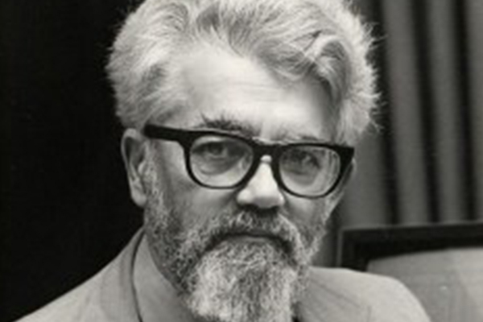

Apa Kata Mereka?
Wiranto - Menko Polhukam
"Kegiatan siber nasional terutama pengamanan siber ini merupakan keharusan, keniscayaan.."

John McCarthy - Pakar Komputasi MIT
"Suatu hari nanti komputasi akan menjadi infrastruktur publik seperti listrik dan telepon."

Rudiantara - Menkominfo
"Smart City menciptakan perubahan sistem lebih efektif dan efisien dalam lembaga pemerintahan."
Bill Gates - Microsoft
"Jika kita tidak memecahkan masalah keamanan, maka orang-orang akan ragu."